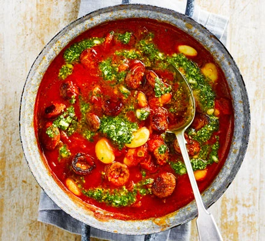

Butter Bean & Chorizo Stew

Description
A hearty stew to feed a family with just four ingredients.
Spicy chorizo and fresh pesto provide tons of flavour and it's on the table in just 20 minutes
Ingredients
- 200g cooking chorizo
- 2 x 400g drained butter beans
- 2 x 400g cans chopped tomatoes
- 1 tub fresh pesto
Steps
- Slice the chorizo and tip into a large saucepan over a medium heat
- Fry gently for 5 mins or until starting to turn dark brown
- Add the tomatoes and butter beans, bring to the boil, then simmer for 10mins
- Swirl through the pesto, season lightly and ladle into four bowls
Home